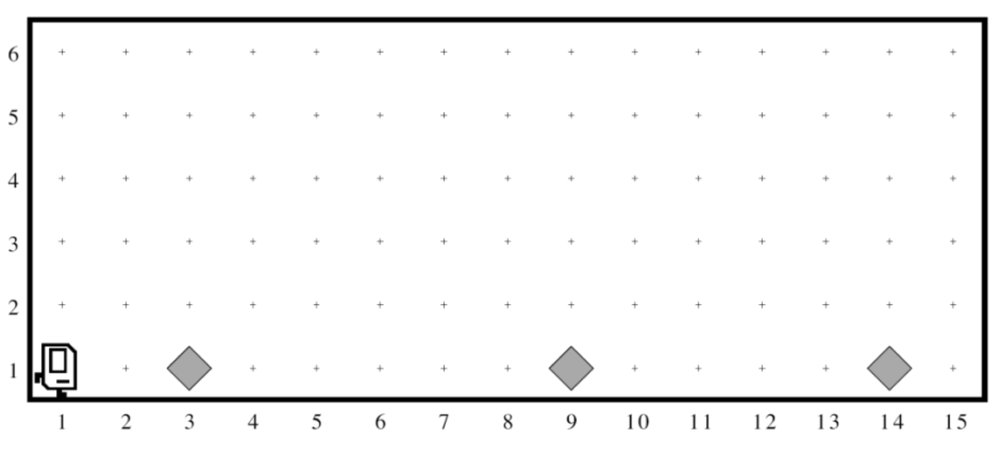
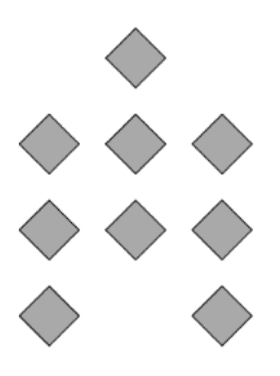
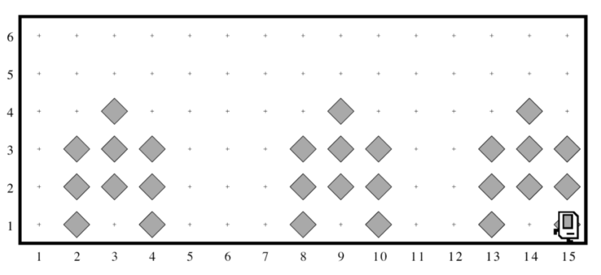

As part of its plans to help reconstruct infrastructure worldwide, the United Nations—that’s right, the UN is using Karel—established a new program with the mission of dispatching house-building robots to repair flood-damaged areas. Your job is to program those robots.
Each robot begins at the west end of a street that might look like this:
Each beeper in the figure represents a pile of debris. Karel’s job is to walk along the street and build a new house in the places marked by each beeper. Those houses, moreover, need to be raised on stilts to avoid damage from the next flood. Each house, in fact, should look exactly like the picture below:
The new house should be centered at the point at which the bit of debris was left, which means that the first house in the diagram above will be constructed with its left edge along 2nd Avenue. At the end of the run, Karel should be at the east end of the street having created a set of houses that look like this for the initial conditions shown:
Keep in mind the following information about the world:
Write a program to implement the United Nations Karel project. Remember that your program should work for any world that meets the above conditions.